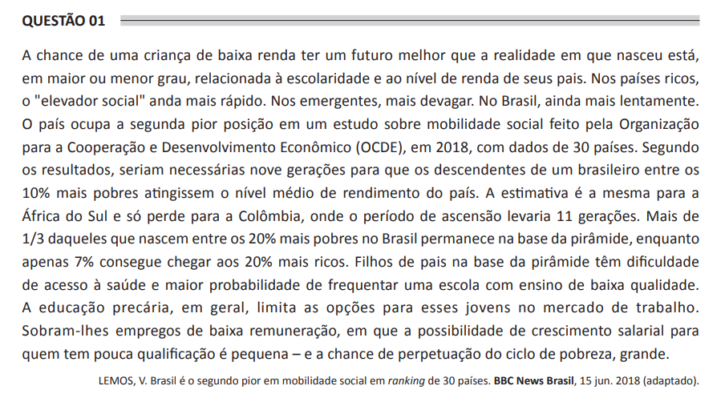

Exame de Ciência da Computação (Bacharelado) Questão 1:  A partir das informações apresentadas, é correto afirmar que: A. O fator ambiental e o fator demográfico afetam a mobilidade social observada, sendo ela menor nos países que apresentam as maiores taxas de natalidade. B. A baixa organização social dos economicamente menos favorecidos determina a baixa mobilidade social da base para o topo da pirâmide. C. A mobilidade social é caracterizada por um fator ancestral que se revela ao longo das gerações, sendo um limitador da eficácia de políticas públicas de redução das desigualdades sociais. D. A análise de mobilidade social permite a observação de um ciclo vicioso, que se caracteriza por uma subida nas camadas sociais seguida de uma queda, repetindo-se esse ciclo de modo sucessivo. E. A ascensão social depende de fatores viabilizadores que estão fora do alcance das camadas pobres, o que ocasiona conflitos sociais em busca do acesso a tais fatores. Anterior Verificar Próxima